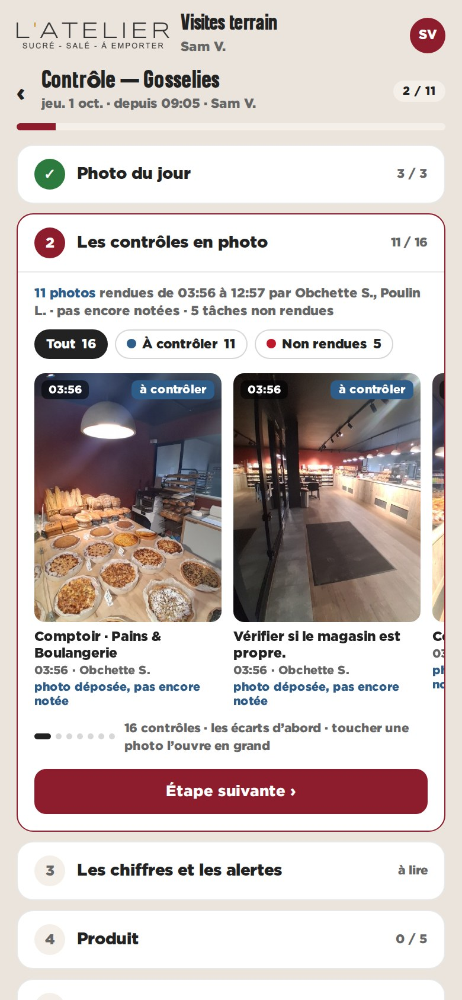
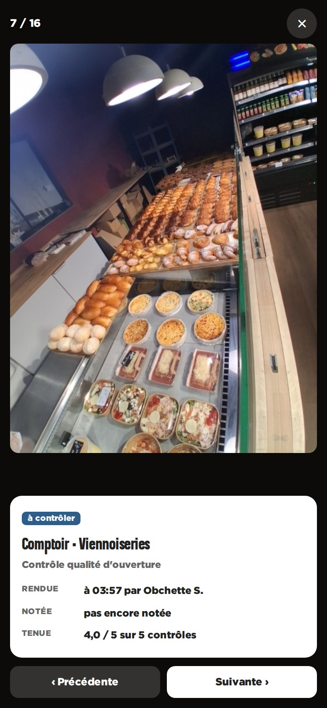

Contrôle guidé · maquette · données réelles de Gosselies, 01/10/2026Les contrôles en photo, dans le contrôle guidé du consultant
Pendant la visite, juste après la photo du jour, le consultant voit ce que l’équipe a rendu depuis l’ouverture : le même carrousel que le dashboard magasin (photo, heure, état, qui l’a rendue), les écarts d’abord, les non rendues en fin de piste. Un toucher ouvre la photo en grand avec sa fiche ; on passe de l’une à l’autre sans quitter la visite. Données réelles de Gosselies, jeudi 1er octobre : 16 tâches, 11 photos rendues entre 03:56 et 12:57, aucune encore notée.

L’étape ouverte, au téléphone

La photo en grand, sa fiche, ‹ ›
Ce que ça apporte
- Le consultant contrôle sur place ce que la photo du matin montrait : même objet, même état, même heure
- Une seule source : /pwa/tasks/photos, déjà lue par le dashboard — rien de nouveau au serveur
- Les écarts (notés ≤ 3) viendraient en tête, en orange, avec le repère dessiné sur la photo
- L’étape se replie comme les autres : « 11 / 16 » reste lisible dans la liste
Limites
- Lecture seule : la note se pose toujours dans le panel, pas ici
- Au téléphone, deux cartes et demie visibles : il faut glisser pour voir les 16
- Les URL des photos expirent après 20 min : une relecture silencieuse quand l’étape se rouvre